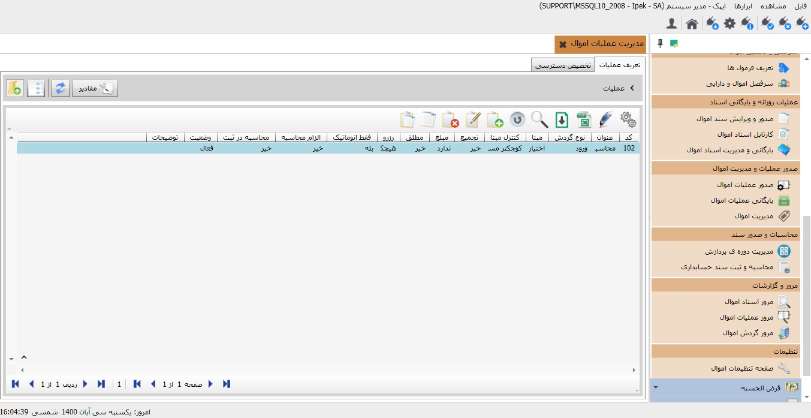
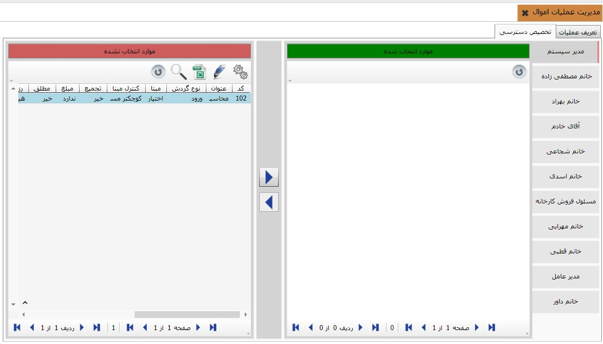

برای اعمال مدیریت اموال، ابتدا «مدیریت عملیات اموال» را کلیک نمایید. همانگونه که در تصویر ذیل مشاهده می کنید، امکان تعریف عملیات های گوناگون فراهم شده است. شما می توانید بر اساس گزینه های تعیین شده موارد را تعریف نمایید.
علاوه بر آن شما میتوانید عملیات های گوناگون تعریف شده را نیز، برای دسترسی کاربران سیستم، تخصیص دسترسی نمایید.همانگونه که در تصویر ذیل مشاهده می کنید.
 لازم به توضیح است که همانگونه که در تصویر مشاهده می کنید، امکان تخصیص عملیات به گروه کاربران مختلف از طریق دکمه های میانی صفحه «اضافه کردن» و «حذف کردن» امکانپذیر می باشد. علاوه بر آن شما می توانید نوع نمایش عملیات ها را بر اساس ایجاد، ویرایش، مشاهده،ارسال ، حذف و تائید معین نمایید. بدیهی است برای مدیر سیستم همواره امکان دسترسی به همه موارد در حالت فعال می باشد.